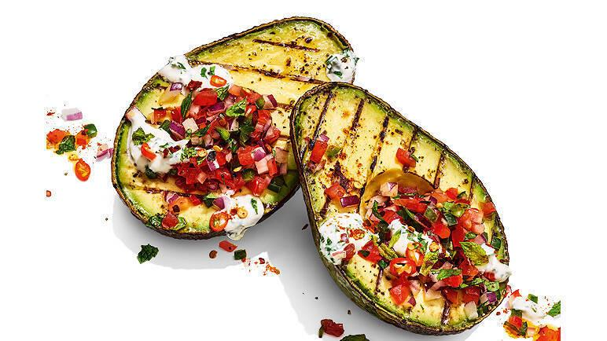

Home
Grilled Avocados Recipe

Description
Grilled avocado is soft and creamy with a rich, smoky taste. This recipe is great to make when you have some ripe avocados.
Simply season them and grill them cut-side down until grill lines begin to form.
Serve in their skins or cut up and use for a smoky guacamole.
Ingredients
- ¼ cup olive oil, or as needed
- 1 pinch ground chipotle pepper, or more to taste
- 1 pinch chili powder, or more to taste
- 4 avocados, halved and pitted
Steps
- Preheat grill for medium heat and lightly oil the grate.
- Whisk olive oil, ground chipotle pepper, and chili powder together in a bowl.
- Grill avocados, cut-side down, on the preheated grill until grill lines begin to form on the avocado flesh.